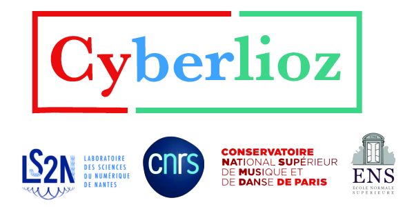

Crédits : Mathias Rossignol, Grégoire Lafay, Vincent Lostanlen, Joakim Andèn, Mathieu Lagrange
Commentaire
En 1844, le compositeur Hector Berlioz publie son Grand traité d'instrumentation et d'orchestration modernes. Cet ouvrage confère une place essentielle au timbre en tant que paramètre d'expression, au même titre que la mélodie, l'harmonie, et le rythme. Sa phrase d'ouverture fit date : « tout corps sonore mis en oeuvre par le compositeur est un instrument de musique ». Elle anticipe l'engouement de la musique savante occidentale pour les sonorités nouvelles : adjonction de lutheries extra-européennes ; usage de sourdines et de préparations ; manipulation « concrète » de bandes magnétiques ; et enfin, synthèse de sons par ordinateur.
Cyberlioz est un logiciel pédagogique d'exploration sonore, dont le but est d'illustrer la richesse timbrale de l'orchestre philharmonique. Il prend la forme d'un panneau d'affichage carré, intégré à une application Web interactive. Soixante-douze points colorés y représentent de courts fichiers audio, issus de la base Studio On-Line (SOL) de l'Ircam. Chacun de ces fichiers contient une note de musique, provenant d'une collection de seize instruments : harpe, violoncelle, basson, trombone, etc. Outre cette diversité organologique, les sons de Studio On-Line offrent une vaste palette de modes de jeux : tremolo, staccato, flatterzunge, etc. Ainsi, Cyberlioz se place dans la tradition du Grand traité d'Hector Berlioz. Il en partage le principe fondateur tout en se dotant résolument des technologies contemporaines de l'ère cybernétique.
En déplaçant le curseur de point en point, on peut écouter et comparer le résultat du couplage entre instrument et technique gestuelle. Or, ces points sont disposés sur l'écran d'après leur similarité de timbre, telle qu'elle est perçue par un·e étudiant(e) en composition au Conservatoire de Paris, dont l'identité a été préalablement anonymisée. Dans Cyberlioz, la distance séparant tout couple de points apparait d'autant plus petite que la similarité des fichiers audio sous-jacents est jugée grande. La coloration des points, elle aussi assignée librement par l'étudiant(e), renforce l'interprétabilité d'une telle cartographie mentale du timbre.
Cyberlioz invite donc à une expérience de métacognition musicale. Naviguant d'un nuage de point à l'autre, on prend conscience de notre faculté à regrouper les sons par similarité de timbre. Puisque les points sont colorés mais non annotés explicitement, on peut s'essayer à un test d'identification à l'aveugle. D'autre part, on peut évaluer le degré de consensus entre la similarité visuelle des couleurs (traduisant la similarité de timbre perçue par l'étudiant(e)) et la similarité de timbre immédiate ressortant de l'écoute. Enfin, on peut se rendre compte du caractère subjectif de la perception auditive, en sélectionnant, via un menu déroulant, l'espace de similarité de différent(e)s étudiant(e)s.
En plus des 31 étudiant(e)s anonymes du Conservatoire, Cyberlioz offre un mode « automatique », dans lequel l'agencement des points sur l'écran est prédit par l'ordinateur. Cet algorithme se fonde sur une description du contenu acoustique par diffusion en ondelettes temps-fréquence (time-frequency scattering en anglais) ainsi que sur la méthode des plus proches voisins à vaste marge (large-margin nearest neighbors). Dans ce mode, l'utilisa/teur/trice de Cyberlioz visualise l'espace dans lequel l'état de l'art en classification automatique de sons représentent les modes de jeux étendus. Cette visualisation est l'occasion d'un débat sur le rôle des algorithmes dans le traitement de l'information musicale et sur les verrous technologiques actuels restreignant la fidélité d'une modélisation computationnelle du timbre.